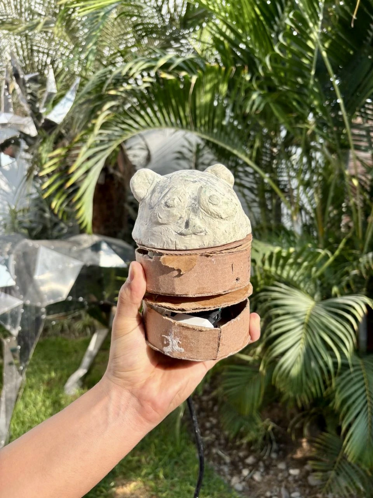
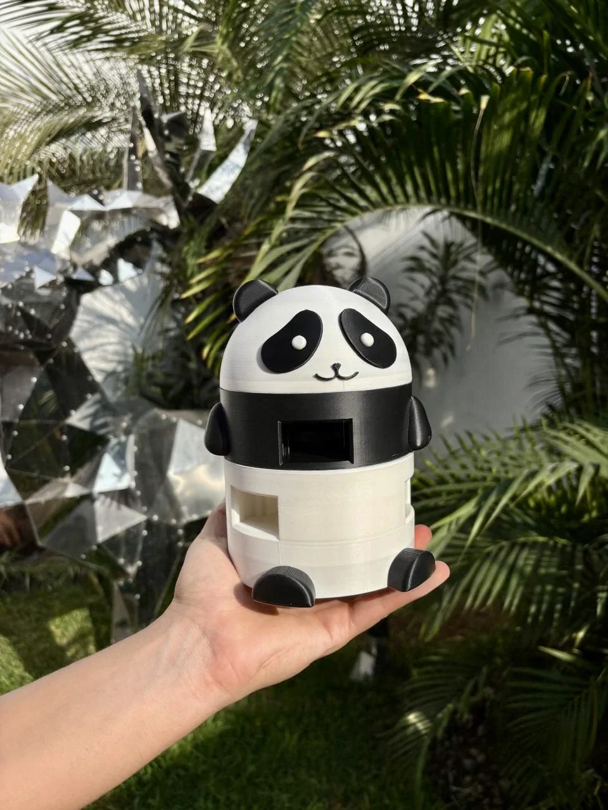
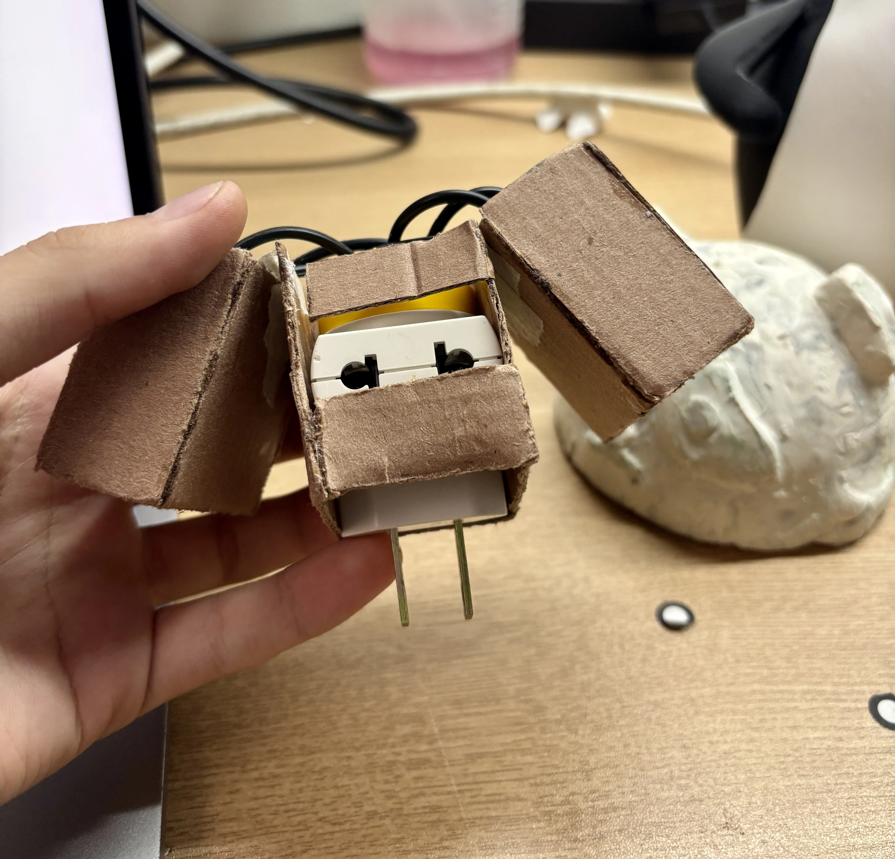

Contenedor panda
De un volumen hecho a mano a un producto terminado.
Modelamos la geometría y la preparamos para fabricar.

Punto de partidaUna muestra puede ser suficiente para empezar.

Dos muestras convertidas en piezas fabricables.
Modelamos la geometría y la preparamos para fabricar.

Punto de partidaDefinimos carcasa, tapa y encajes a partir de la muestra.

AntesMedidas críticas.
Espesores, encajes y aperturas.
Imprimir, probar y ajustar.
Muestra, maqueta, foto o pieza vieja.